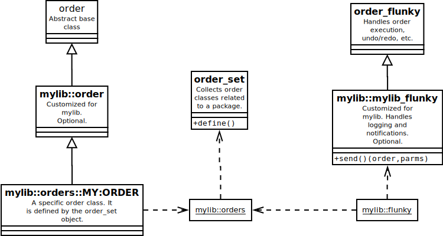

order(n) -- Order Base Class, submodule of marsutil(n)
package require marsutil 3.0.23
The ::marsutil::order class is part of the Mars Order Processing framework, which includes order(n), order_set(n), order_flunky(n), and order_dialog(n).
In this framework, an "order" is a request from the user to change the program's state in some way, e.g., to add, update, or delete an entity of some kind. Each type of order has its own parameters; together they have the same interface, which supports validation, logging, and user undo/redo.
An order is created as an instance of an order leaf class, which is a descendant of ::marsutil::order. It can be validated and executed on its own; more typically, it is executed by an instance of order_flunky(n), which handles the undo/redo stacks.
New subclasses of order(n) are defined using an instance of order_set(n), which ensures that the each order class has the right superclass and good default metadata settings. The order set then provides introspection on the set of defined order classes and validation of order type names.
Each application or library that defines orders will usually define its own order_set(n) and order_flunky(n) objects, and may choose to subclass order(n) and order_flunky(n).
When the Mars Order Processing framework is used in an application context, the order classes can usually access all needed resources using well-defined names. When it is used in a library context, e.g., to control an instance of the library, then the orders will typically need access to the instance command. This is usually done by subclassing order(n) to make an intermediate base class. All order types defined by the application would then be subclasses of the intermediate base class. order_set(n) can be configured to define the set's orders with the appropriate base class.
The actual orders are leaf classes descended from ::marsutil::order, as defined using order_set(n)'s define method. Each order class represents a particular kind of operation on the application or library's data. This man page explains the standard interface for every order class.
Each instance of an order class goes through a lifecycle, as indicated by the four order states: CHANGED, INVALID, VALID, and EXECUTED. The order object's current state is returned by its state method.
When first created, an order is in the CHANGED set; it returns to this state whenever the order's parameters are modified.
When the order's valid method is called, the order's parameters are validated, and it goes to the VALID or INVALID state.
If the order is in the VALID state, then calling its execute method makes the order take effect; the order will be in the EXECUTED state.
It is usually possible to undo an EXECUTED order. If the canundo method returns a true value, then the undo method will undo the order's effects and the order will return to the VALID state.
NOTE: Undo/redo will only work if proper undo/redo stack discipline is maintained. For this reason, orders are usually executed, undone, and redone under the control of an order_flunky(n). See EXAMPLES, below.
Subclasses of ::marsutil::order are expected to customize the parent class in the following ways:
order(n) subclasses are to use the parmlist metadata value to define the list of its parameters and their default values. Note: If a parameter has a default value, it is assumed that it can never validly be the empty string, i.e., that it can never be NULL in the SQL sense. If this is an issue, the order should define a sentinel value for that parameter that indicates that it is empty, e.g., "NONE", thus providing the functionality while meeting the constraint.
See EXAMPLES, below.
The following commands create instances of order(n), which isn't usually all that useful.
Creates a new instance of ::marsutil::order called name; if given, the parmdict is a dictionary used to initialize the order parameters.
It is more usual to create order instances via an order_flunky(n).
Each instance order(n) or its subclasses has at least the following groups of subcommands.
Each order class will have a number of attached metadata values; these are defined by the meta class definition statement. The meta statement takes a name and value and defines an instance method and a class method, both called name, and both returning the value.
By convention, subclasses of order(n) should define the following metadata items. Note that order_set(n)'s define method provides defaults for these. In addition, the programmer may choose to add any additional metadata he likes.
Returns the name of the order, e.g., "MY:ORDER". By convention, orders have names in all capital letters with ":" as a separator. This is distinct from the order class's name, which is usually the order name qualified by some namespace.
The name metadata item is usually defined automatically by order_set(n).
Required. Defines the order's parameter names and their default values using Tcl's proc argument list syntax: each element in the list defines the name of a parameter. If the element is a pair, the second item in the pair is the default value; otherwise the default value is the empty string.
If a parameter has a default value, then using set to set it to "" will actually set it to its default value.
Every leaf class should define this metadata value.
Returns a list of the order_flunky(n) states in which this order may be sent. "Send States" are a means of controlling which orders can be used at different times; see order_flunky(n) for details.
order_set(n) defaults this value to the empty list, which is appropriate if "send states" are not being used.
Parmtags, or "parameter tags", relate order parameter names to data types that can be "pucked" in the application's GUI. The value of this item is a dictionary of data types by parameter name.
order_set(n) defaults this value to the empty list, which is usually appropriate.
This a boolean flag; if true (the default), the order's execution should be monitored and reported to the application, and if false then not. Just what form the monitoring will take depends on the application, and will be implemented by a subclass of order_flunky(n).
The only reason for turning monitoring off is when executing an order that performs a large amount of work and then sends its own notification at the end (i.e., locking a scenario or ticking time forward).
The order's parameters and their default values are defined by the order class's defaults metadata item. Parameter values are saved in the instance's parms() array. Order classes defined using orderset(n) can use the parms() array freely in all of their methods; other classes would need to call my variable parms in each relevant method to bring parms() into scope.
The following subcommands manipulate the parms() array.
Sets the value of the named parm, and changes the order's state to CHANGED. This command cannot be used when the order is in the EXECUTED state.
Note: If the value is the empty string, and the parm has a default value, then it will be assigned its default value.
The user may also make the following queries:
Returns a narrative string for the order instance. This string defaults to the order's title, e.g., "My Order"; the class may override this method to provide a more detailed narrative.
The narrative primarily appears in the Edit/Undo and Edit/Redo menu items.
This command returns the order object's own state, which is one of CHANGED, VALID, INVALID, or EXECUTED:
The following methods are used to move an order through its lifecycle. See Order Lifecycle, above.
Executes the order, optionally in the context of an order_flunky(n) called flunky. If a flunky is provided, then the order preserves the flunky's execution mode; this is made available to the order code via its mode method.
The order is executed by calling its _execute method, and passes along that method's return value to its caller.
Only VALID orders can be executed; after execution, the order will be in the EXECUTED state.
The subclass must override this method to carry out the order's work on execution. The method may use the Execution Helpers, and the parameter values are accessed via the parms() array. This method's return value will be returned to the ultimate caller.
Usually an undone order can be redone simply by executing the order a second time, in the same way. Sometimes in order to redo the order identically, the order requires information produced during the first execution. In this case, the order should save that information in an instance variable so that it is available on redo.
Similarly, if the execute method was called with a flunky, it is passed along to this method; and if there is any information from the flunky that the order needs for undo/redo, it should be saved in an instance variable.
Returns 1 if the order is EXECUTED and can be undone, and 0 otherwise.
By default, the order can be undone if the _execute method specified an undo script using setundo. The developer may choose to override this method in subclasses.
The following methods are for use in subclasses' _validate method. They are "protected", i.e., they can be used only in order(n) subclasses.
The prepare method prepares the parameter for use by the _execute method. It can transform and validate the parameter value in a number of ways.
It is customary to begin each order's _validate method with a succession of prepare commands, one for each parameter. The method's useful work is done by the options, which are processed in order from left to right. The options are as follows:
-type. It indicates that the value is
a list of which every element must be a member of the specified
validation type. If any element is invalid, the parameter is
rejected.
-type option.
Indicates that the value of the parameter must belong to a validation type called valtype. Specifying this option is essentially the same as including the following code snippet in the order body:
my checkon $parm {
set parms($parm) [{*}$valtype validate $parms($parm)]
}
The valtype's "validate" method is used to validate the value, and may also put it into canonical form.
Note that
my prepare -type ::foo
is simply a convenient shorthand for
my prepare -with {::foo validate}
Indicates that the value of the parameter must be acceptable to a validation command called valcmd. Specifying this option is essentially the same as including the following code snippet in the order body:
my checkon $parm {
set parms($parm) [{*}$valcmd $parms($parm)]
}
The validation command should accept and return a valid input, possibly putting it into canonical form, and throw INVALID for invalid inputs.
If the given parm is not known to be "bad" (see badparm), then this method executes the script to validate it further. The script may call reject to reject the parameter; or, the parameter will be rejected automatically if the script throws INVALID (as it might if a validation type is used to validate the value).
For example, the following code will validate that parameter i is an integer, only if i isn't already known to be "bad".
my checkon i {
snit::integer validate $parms(i)
}
The following methods are for use in subclasses' _execute method. They are "protected", i.e., they can be used only in order(n) subclasses.
If the order was executed by an order_flunky(n), this command will return its execute mode, one of gui, normal, or private. Otherwise, it will return private. (See order_flunky(n) for details.) Note that an EXECUTED order preserves the flunky's mode at the time it was executed.
In particular, if the mode is gui then the order may access the GUI, e.g., to pop up confirmation dialogs.
First, create an order_set for this package's orders. This is usually # done in the pkgModules.tcl file, just prior to the modules that define orders.
::marsutil::order_set ::mylib::orders
Then, use the order set to define the orders. See order_set(n) for metadata defaults.
mylib::orders define BSYS:PLAYBOX:UPDATE {
meta title "Update Playbox-wide Belief System Parameters"
meta sendstates {PREP}
meta defaults {
gamma 1.0
}
method narrative {} {
return "Set Playbox Gamma to [format %g $parms(gamma)]"
}
method _validate {} {
my prepare gamma -required -num -type ::simlib::rmagnitude
}
method _execute {} {
my setundo [bsys mutate update playbox "" [my getdict]]
return
}
}
Next, the library or application must create an order_flunky(n) to manage order execution for this set of orders:
set flunky [::marsutil::order_flunky new ::mylib::orders]
The flunky can then be used to execute orders in several ways. For example,
# Send the order $flunky send normal BSYS:PLAYBOX:UPDATE -gamma 1.5 # Undo the last order $flunky undo # Redo the last undone order $flunky redo
order_flunky(n), order_set(n).
order(n) requires Tcl 8.6 or later.
Will Duquette
Original package.
mars 3.0.23 Man page generated by manpage(n) on Fri Nov 20 09:53:54 PST 2015